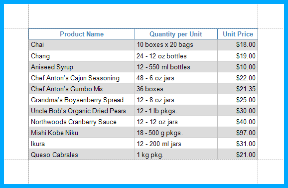

Report Visual Styles
This topic describes how to combine appearance properties into styles and apply them to report elements.
Create a Report Style
Use the following approaches to create a visual style in your report:
Extract a Style
Specify a report control's appearance properties and press Extract Style in the report's toolbar.
Create a new Style
Press the caption button in the toolbar's Styles group to invoke the Styles Editor.
Press the Add a style button and specify the new style's appearance properties. Close the Styles Editor.
The created style is added to the Style gallery. You can access this gallery in the following places:
the Styles group in the report's toolbar;
the Styles group in the Report Explorer.

Assign a Style to a Report Element
Select a report element and press a style in the toolbar's Styles group.

This assigns the style to the report element's Style property.
Assign Odd and Even Styles
You can use the Odd Style and Even Style properties to apply different styles to alternating rows in a report.

Customize a Style
Press the caption button in the toolbar's Styles group to invoke the Styles Editor.

Select a style and modify its property values. All the report elements apply the updated style immediately.
Style Inheritance
Nested elements inherit their parent element's style if they do not have an applied style.
Override Styles
You can specify a different value for a report element's appearance property to override the corresponding property value in the report element's style.
Note
If you apply conditional formatting, its appearance property values have a higher priority than both the individually specified properties and the style's properties.
Reuse Styles
You can add a style to the Report Gallery and use it across different reports.
In the Report Explorer, right-click a style and choose Add to Gallery.

The styles that the Report Gallery includes are available across reports. Drag a style from the Report Gallery to a report element.

This embeds the style to the report and set's the report element's Style property.
Note
You can combine styles into style sheets and reuse them in reports.